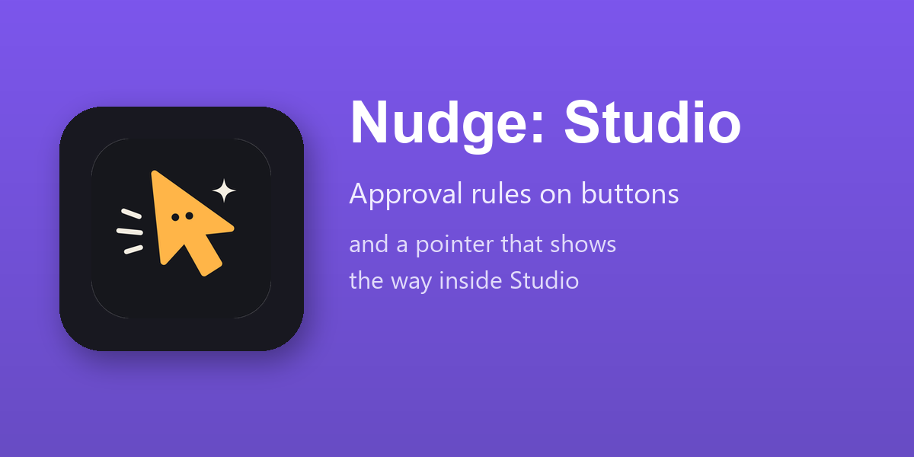

Requires Odoo Enterprise (web_studio).

"Confirming a purchase order above 50,000 needs the approval of the finance manager": in Dev mode Nudge reads the buttons of the form, finds the approvers, and proposes the rule on a card: the button, who approves, the condition, who is told. Made after your yes, as a Studio approval rule, where Studio shows it.
Ask how to add a field, a tab or a button and choose On the screen: the pointer goes into Studio's editor, tab by tab and field by field, and says what to do and why. The Studio pages of the official documentation come with Nudge.
The rules already on a button are read and shown first, so that a new rule does not double an old one. A rule Nudge made is deleted only when you ask for it by name, and taken back with the rest of what it built in the conversation.
Developer mode is off by default and for administrators only. Nothing is made before a yes; every step is in What Nudge Did.
Installed by itself where Nudge and Odoo Studio of Odoo Enterprise are both there. Switch on Nudge for Developers under Settings ‣ Nudge, and the Dev mode appears for administrators.